CS180 Project 2 - Fall 2026
By: Jessica Nguyen
I implemented 2D convolution two ways: with four nested loops (checking every output pixel and every kernel element) and with two loops (checking every output pixel but using NumPy to multiply the kernel and image patch all at once). Both flip the kernel before sliding it across the image, which is correct by definition. Both implementations have time complexity O(H × W × K²), since we process every output pixel and perform K² operations per pixel. The 2-loop version is faster in practice because NumPy's vectorized operations run in compiled C, while the 4-loop version executes K² separate Python multiplications per pixel.
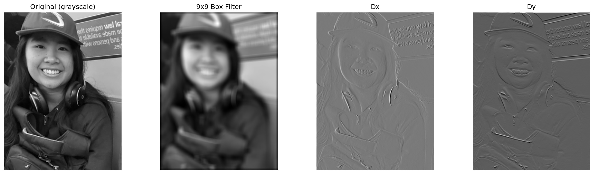
✏️ Describe the partial derivatives and gradient magnitude, and justify your threshold choice (0.25).
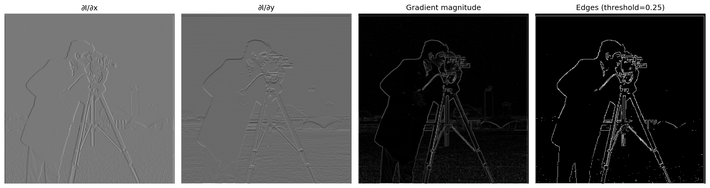
✏️ Explain how you built the Gaussian and DoG filters, and compare these results with the finite difference results from 1.2.
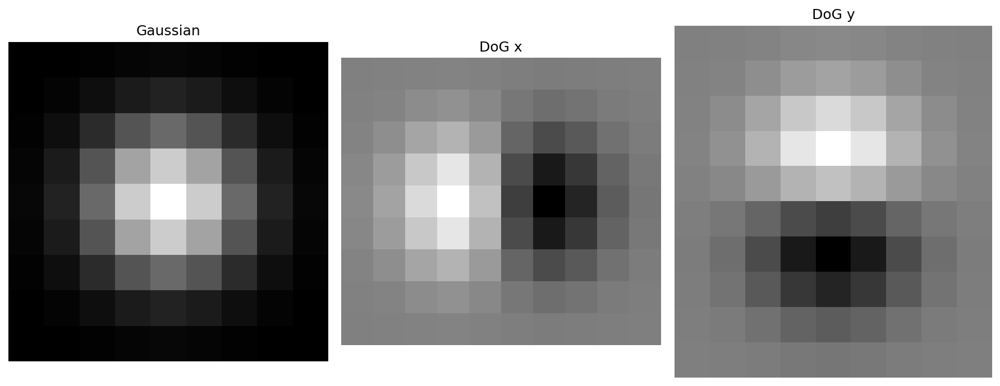
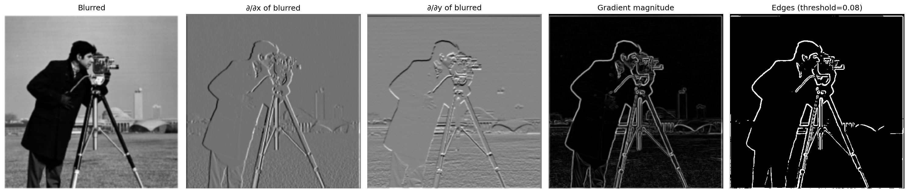
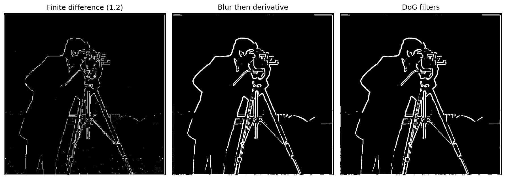
✏️ Explain how the unsharp mask works in relation to blurring and high frequencies, and how changing α changes the result.
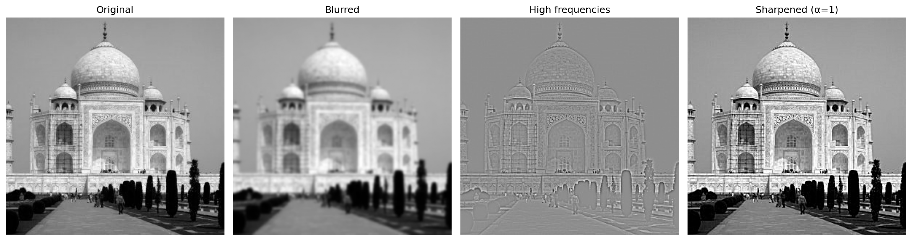
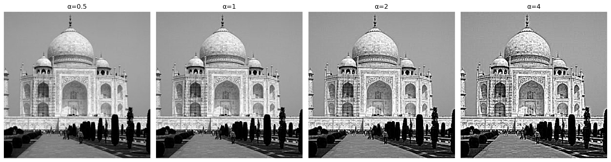
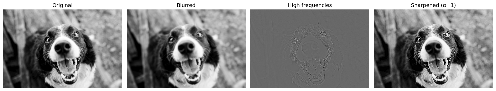
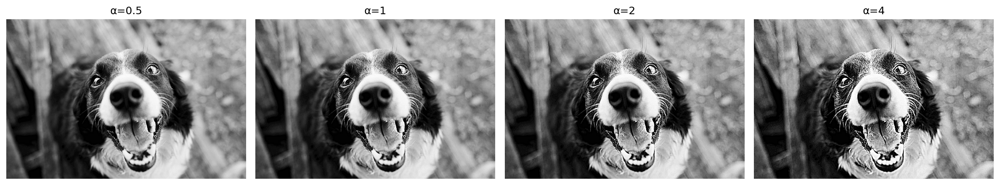
✏️ Explain your alignment, filtering, and cutoff frequency (σ) choices.
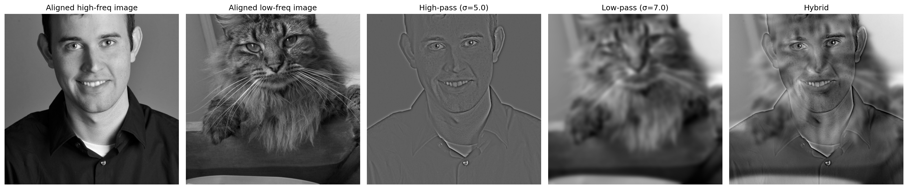
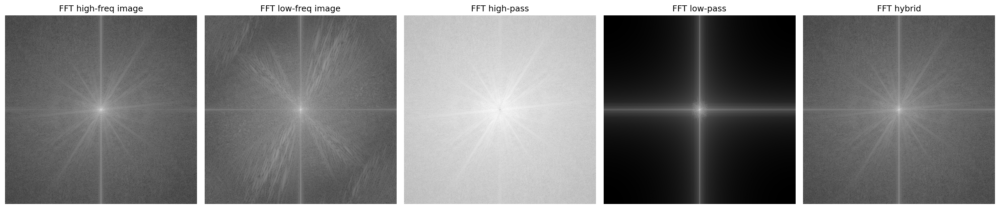
✏️ Explain how your Gaussian and Laplacian stacks are built and how stacks differ from pyramids.
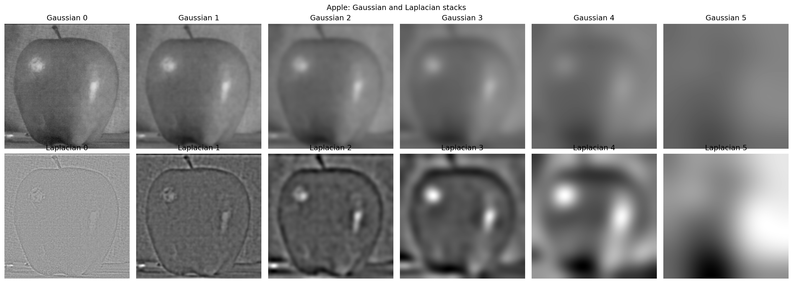
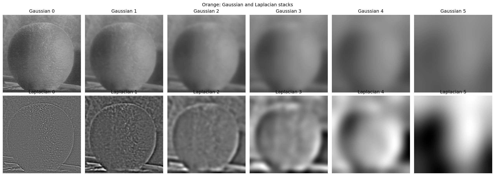
✏️ Explain how multiresolution blending works and describe your mask choices.
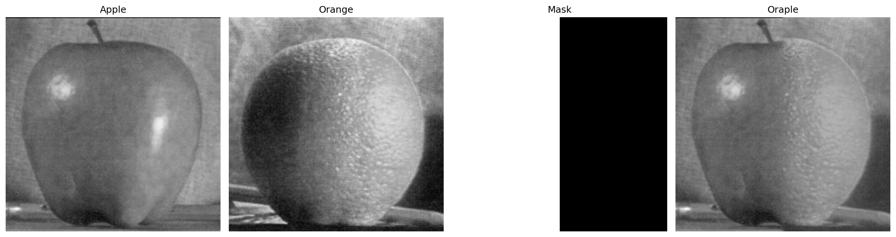
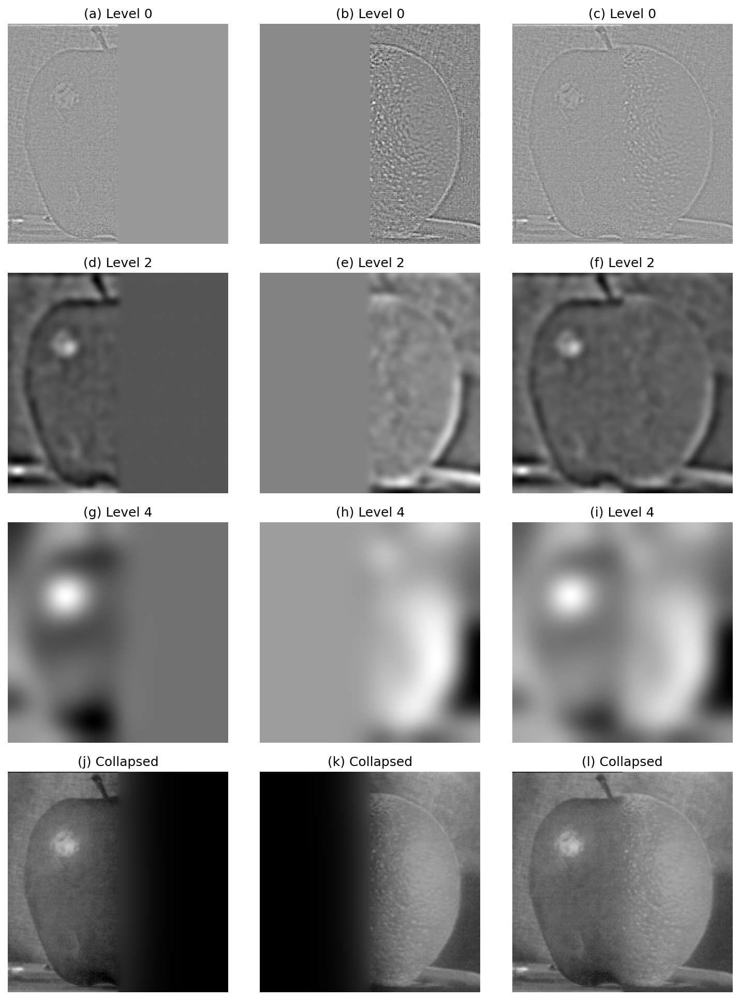
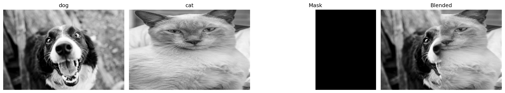
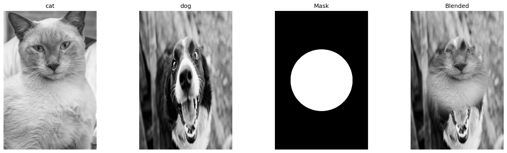
✏️ Write the most important thing you learned from this project.